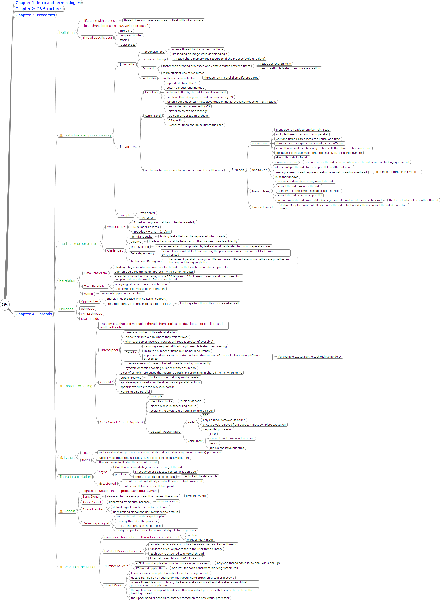

OS

OS
Chapter 1: Intro and terminalogies
Definitions
Resource
Active
Speed matters
Passive
physical
logical
OS
manage HW and SW resources
Connect HW and SW
manage applications
User needs
in single user systems
performance
in mainframes
fair sharing
in workstations
a tradeoff between usability and resource management
in PDAs(Personal digital assistant)
performance
battery life
System needs
using resources optimally
Error handling
Organization
Firmware
initialize cpu registers, memory content
load os kernel into memory
in ROM or EEPROM
Mainframe
place full of computers, used to service a lot of people
performance and balancing is important
Os event handling
Polling
used when very quick response to some event is needed
when large data is supposed to arrive at intervals
Interrupt
used more commonly
used when efficiency is needed(time is important resource)
more concurrency is needed(multiple devices are being handled)
types
Hardware
Some external hardware changes voltage
after ISR complete, program continues
Software
execute a special instruction
write into memory mapped reg
Trap
to trigger from user mode to kernel mode
Exception
highest priority
triggered when HW finds a fault
after ISR completes, program will not continue, but set to some fixed location
Responses
Disable interrupts
push current pc to stack
execute the ISR
save and restore any registers used
re-enable interrupts
interrupts inform the completion of I/O
can be nested in some OSs
DMA
used for repetitive jobs that don't much of computational
steals clock cycles from CPU to access the bus
What OS does with respect to DMA
determine buffers, pointers, counters of I/O device...
send the start command
Completion of transfer is informed with an interrupt
OS operations
dual mode
user mode(1)
kernel mode(0)
privilaged instructions
I/O
timer management
timer is a separate HW
fixed or variable
prevents from programs to get stuck in infinite loop
time sharing
instruction to change mode bit
interrupt(and interrupt vector) management
errors are detected by HW
it will trap the OS
trap transfers control through the interrupt vector to OS
Process management
processes create other processes
Os responsibilities
creating and removing processes
suspending and resuming processes
mechanisms for process sync
mechanisms for process communication
mechanisms for deadlock handling
deadlock is when two processes have resources but need resources the other has
Memory management
Keeping track of which parts are being used and by whom
deciding which processes and data move into and out of memory
allocating and deallocating memory
Storage management
main memory is limited, needs support
Mass storage
free space management
storage allocation
disk rescheduling
secondary storage
tertiary storage
its slower and cheaper
WORM(Write Once Read Many)
RW
File system
logical storage unit
management
creating, deleting
mapping files into secondary storage
backing up files
manipulating
I/O Systems
hide details of I/O from user, subsystem does this
I/O subsystems
a memory management component for buffering, spooling ...
general device driver interface
drivers for specific hardware devices
only device drivers know details of behavior of device
Caching
management
replacement policy
choosing size of cache
different levels
controlled by OS
Disk to mem
Or HW
mem to regs
multiprocessors
cache coherency
invalid data if changed in one of processors until updated
Distributed systems
replication control
replicas are like cache mems in different systems
there is a middleware that handles connections between all systems
transparency
user thinks it is working with one system that has configurations equal to sum of all systems
Protection and security
Protection
mechanism for controlling access of users to resources
Security
preventing malwares, and defending system from attacks
done by OS and additional software and policies
Command interpreter
Multi-Processors
share bus, memory and clock sometimes
tightly coupled
that is they share the clock
Loosely coupled
the clocks may differ after some time because of voltage change
advantages
increased throughput
not N times
Economic
due to sharing
Increased reliability
Fault tolerance
more than one core do the same task, so that if the results are not the same, the task is given to another pair of cores.
outside world will not understand system fault
Graceful degradation
faulty cores chores is given to all others, slows all processes a little
outside world understands the speed degradation
Types
Asymmetric
master-slave
Symmetric
like windows, linux, mac ...
Blade Servers
multiple processor boards, each one has its own resources, boots independently
High availability
OS Structures
Program vs process
Job
smallest piece of a task that can be processed
the request for process that hasn't been allowed by system yet
Process is alive, and has resources
program is a set of processes and jobs.
Batch
a set of instructions as a batch file that run together
Buffering
a pipe-like memory to handle the speed difference between CPU and a device
Spooling
when the buffer is too large, like printing, that there is no actual buffer, but the data is read from the memory(disk)
Multiprogramming
jobs are loaded into memory, but switch at wait for I/O, or completion
Time sharing(multi tasking)
jobs are loaded and given a time-slice, switch at all above and end of time-slice
switching takes place with high frequency
user has interaction with whole system
Job scheduling
selecting a job from the job pool
CPU scheduling
selecting the next ready job to run
Virtual memory
uses physical memory to make user believe that he has more memory, by swapping.
Environments
Traditional
Mobile
Small memory
efficency is required
slow processor
small keyboard
wireless tech
GPS and gyroscope
Distributed
Network of heterogeneos computers
Speedup
Resource sharing
increase reliablity
increase functionality
Client Server
Compute servers(Databases)
File servers(Web servers)
P2P
All computers can be client and server, each have some resources.
Ideas
each node registers its services to a Centerilized lookup service
each node Broadcasts request and wait for response
Virtualization
allows computer to run apps within other OSes
Emulation
source and target CPU types are different
slowest method
Virtualization
OS natively compiled for CPU
OS runs guest OSes also natively compiled
a VMM(VM manager) is loaded on HW, that loads other OSes kernels
Cloud
delivering services over network
Types
Public clouds
available to anyone willing to pay
Private clouds
specific for companies ...
Hybrid
both of above
SAAS
Software as a service
like google sheets
PAAS
Platform as a service
software stack ready for application like database servers
IAAS
Infrastructure as a service
servers or storage
like digitalocean droplets
Realtime embedded
special purpose
little or no UI
Power consumption is main concern
may use different OSes
general purpose(UNIX)
Special purpose(Windows CE)
App specific ICs(ASIC) with no OS
time sensitive in the process of sensing/computing/actuating
properties
Computationally correctness
Temporally correctness(should work fast)
Notions
HRT(Hard real time)
missing one deadline means failure of whole system
used in important places(airplanes ...)
SRT(Soft real time)
usefulness of result degrades after deadline, degrading the systems quality of service
FRT(Firm real time)
infrequent deadline missing is tolerable, but degrades quality, usefulness of result after deadline is zero
needs Real Time OS
some may need secondary storage but not recommanded because of being slow
special storage management, scheduling ...
Chapter 2: OS Structures
OS Services
Program execution
I/O Operations
File systems
Communication
Resource allocation
Accounting
Error detection
Protection and security
User Interface
Command line
In the kernel
less overhead
faster
as a special program(shells)
can have system calls
are somehow an API
interpret commands into some system calls and run them
Batch(file)
GUI
System Calls
The basic way to communicate with OS
OS Specific
it switchs between user and kernel mode
API
Standardizing the use of system calls
Portablity of programs on every system supporting this API
System programs
sequence of system calls to do more complex things
Passing parameters
Registers
its small
has limitation
but its fast
Blocks of memory
no limitation
repetitive memory access
slow
Stack
slower than register
in the kernel
most common
more memory than register
Types
Communication
pipe, shm_open, mmap
Types
Shared memory
maximum transfer rate
processes should manage problems and not OS, because from where OS sees, both have access
problems
sync
protection
Message passing
slower
suitable for small amount of data
simpler implementation
Process control
fork, exit, wait
File manipulation
open, read, write, close
Device manipulation
ioctl, read, write
Information maintenance
getpid, alarm, sleep
Protection
chmod, umask, chown
System programs
AKA system utils
provide good env for development and execution
Categories
file management
copy
status information
file modification
text editors
programming language support
compilers
program loading execution
communication
background services
process scheduler
OS Design & Implementation
User goals
simple
easy to learn and use
reliable
numerous interfaces means less reliablility
fast
safe
System goals
easy to design, implement and maintain
flexible
reliable
error free
efficient
there is no Unique way to the best design
Some Defenitions
Mechanism
How to do something
Policy
What will be done to do something
OS Structure
Simple
MS-DOS
application program -> resident system programs -> device drivers -> ROM BIOS device drivers
application program -> ROM BIOS device drivers
this full access means low protection and security
but only one program can run at the same time
this program has access to everything
resident system program is a system program that can run alongwith the only app. program
ROM BIOS device drivers are primitive drivers in bootstrap
device drivers are more high level than BIOS, like network...
terminal only handles I/O and does not process
UNIX partially layered structure
kernel between HW and shells
kernel has two interfaces
interface with HW
system calls(interface with UI)
kernel mode and user mode
Layered
there is no actual layered OS
advantages
simple debugging
simple construction
Problems
inefficiency
precise definition of layers
hard to implement
moves towards monolithic(partially layered)
Micro-Kernels
Removing all unessential parts from kernel
instead implementing them as user-level or system programs
the kernel does
minimal processing and memory management
IPC(interprocess communication)
Advantages
extensibility of OS
Portablity
potential for making distributed systems
reliablity
service failure doesn't destroy OS
problems
performance loss
due to IPC(a lot of user mode - kernel mode switch)
vs monolithic
monolithic has better performance because of the overhead on IPC
in monolithic all services are running, but here only needed services will run
Mach, QNX, L4, Windows NT
Modules
One of the best current methods
Uses OOP to create a modular kernel
modules can be loaded dynamicly
on boot time
or run time
all modules run in kernel mode
benefits
each module defines protected interface
primary module has only core functions
portablity
reliablity
modules do not use message passing for communication(so better performance)
VMs
VMs are loaded on VMM, which somehow acts as a firmware
benefits
VMs are completely isolated
no protection problem
No direct sharing of resources
sharing the same HW
perfect tool for OS research and dev
difficulty
disk space
solution : minidisks(partitioning)
Implementation
some have more than one mode bit
user mode
user is the VM, so it has to think it has a kernel mode
virtual kernel mode
virtual user mode
kernel mode
undelying OS may be microkernel, monolithic ...
Major difference in time(virtual I/O)
slower if interpreted
faster if spooled
Hybrid systems
most systems use two or more of above structures
Linux and Solaris
Monolithic
high performance
Modular
functionalities added dynamicly to kernel
Windows
Largely monolithic
microkernel
Modular
OS Debugging
Debugging
act of finding and fixing errors
Bugs
performance problems are considered bugs
so debugging may include performance tuning
by removing bottlenecks
Core dump
a capture of the memory of the process
Crash
Failure in kernel
Chapter 3: Processes
Intro
Program
a passive entity
Process
an active entity
a program that is loaded into memory with pc and resources
single threaded
multi-threaded
Process states
New
when admitted -> Ready
Ready
when dispatched by scheduler -> Running
Running
with exit -> Terminated
with I/O or event wait -> Wait
with interrupt -> Ready
Wait
with I/O or event completion -> Ready
Terminated
PCB(Process Control Block)
Contains
Process state
program counter
CPU registers
CPU shceduling info
mem management info
accouning info
I/O status info
each process has an id
there can be limited number of processes
its important in embedded systems
Process scheduling
Context switch
5 levels
save p1 state into pcb1
reload state from pcb2 into p2
run p2 until interrupt or system call
save p2 state into pcb2
reload state from pcb1 into p1
multiple register sets for faster context switch
Job queue
Ready queue
I/O devices queue
in all queues, search in o(n) and insert in o(1)
PCBs can only be in one of these queues
Schedulers
long term(job scheduler
often in batch system, from spooled requests
controls the degree of multiprogramming
not in all OSes
prepares a good mix of I/O bound and CPU bound processes
Stablity: process creation rate < process completion rate
short term(CPU scheduler)
high frequency
context switch overhead must be kept low
Medium term scheduler
used in multiprogramming
dynamicly change the degree of multiprogramming by swapping
Operations on processes
Process creation
keywords
fork()
unix system call to create a new process
pid
process ID
each process is created by its parent(except first)
Possibilities after creating a new process
parent continues execution concurrently with its child
parent waits for child termination
wait()
used when reliablity is important
Possibilites regarding to address space of new process
child is a duplicate of parent(same program and data)
child has a new program loaded to it
Process termination
exit()
abort by some other process(noramlly its parent)
cascading termination
if parent is terminated, children are terminated
reasons for parent to terminate its child
child exceded using resources
child task is no longer required
parent is exiting(depends on OS)
VMS -> Cascading termination
UNIX -> Reparent
Process communication
Independent process
deterministic
the result is always the same
no shared data
Cooperative process
non-deterministic
shared data
normally through shared memory
mutual effect on each other
Examples
producer - consumer
via shared mem
via message passing
message passing
direct communication
indirect communication
mailbox
ports
Buffering
Zero capacity
the queue length is zero, so nothing is buffered, so the sender is blocked until receiving a response
bounded buffering
buffer has a fixed size
when buffer is full
new data is dropped
new data is blocked until buffer is not full
unbounded buffering
not blocking
potentially infinite length of buffer
data will always go into buffer
Examples
POSIX shared mem
message passing
blocking(sync)
non-blocking(async)
socket
IP address
specifies host
Port
specifies communication process
server listens
clients create a socket and request for connection to IP:PORT
Property
unstructed stream of bytes, both client and server should know the structures
RPC(Remote Procedure Call)
structured byte stream as the info to initiate and do a procedure call
an RPC daemon listens on a port
message contains
id of the function to run
parameters passed to the function
marshalling: sending function id and parameters as message
output of function is sent back in another message
port
predetermined port at compile time
fixed port address
less overhead
dynamic
more flexibility
RMI(Remote Method Invocation)
a java feature
client
stub
marshals function and parameters to server skeleton
remote object
skeleton
recieves function and parameters
unmarshal the function and parameters
runs and returns and sends value to client
marshalled paremeters
if client local variable: sent by copy
copy: write the state of variable to a byte stream
if server variable: sent by reference
Pipes
bidirectional vs unidirectional
two way vs one way
half duplex
data can travel both ways, but only one way at the same time
full duplex
data can travel both ways at the same time
one way
relationship
server-client
over network vs local
Types
unnamed pipes(ordinary pipes)
unidirectional
only exists when processes are communicating
named pipes
can be bidirectional
no parent-child relationship
once a named pipe established, several processes can use it
continues to exist after communication finished
in UNIX, its a file, can be opened, written into, and read from.
Chapter 4: Threads
Definition
difference with process
thread does not have resources for itself without a process
signle thread process(Heavy weight process)
Thread specific data
Thread id
program counter
stack
register set
multi-threaded programming
benefits
Responsiveness
when a thread blocks, others continue
like loading an image while downloading it
Resource sharing
threads share memory and resourses of the process(code and data)
Economic
faster than creating processes and context switch between them
threads use shared mem
thread creation is faster than process creation
more efficient use of resources
Scalability
multiprocessor utilization
threads run in parallel on different cores
Two Level
User level
supported above the OS
faster to create and manage
implementation by thread library at user level
user level thread is generic and can run on any OS
multithreaded apps cant take advantage of mutliprocessing(needs kernel threads)
Kernel Level
supported and managed by OS
slower to create and manage
OS supports creation of these
OS specific
kernel routines can be multithreaded too
a relationship must exist between user and kernel threads
Models
Many to One
many user threads to one kernel thread
multiple threads can not run in parallel
only one thread can access the kernel at a time
threads are managed in user mode, so its efficient
if one thread makes a blocking system call, the whole system must wait
because it cant use multi-core processing, its not used anymore
Green threads in Solaris
One to One
more concurrent
becuase other threads can run when one thread makes a blocking system call
allows multiple threads to run in parallel on different cores
creating a user thread requires creating a kernel thread -> overhead
so number of threads is restricted
linux and windows
Many to Many
many user threads to many kernel threads
kernel threads <= user threads
number of kernel threads is applicaton specific
kernel threads can run in parallel
when a user threads runs a blocking system call, one kernel thread is blocked
the kernel schedules another thread
examples
Web server
RPC server
mutli-core programming
Amdahl's law
S: part of program that has to be done serially
N: number of cores
Speedup <= 1/[s + (1-s)/n]
challenges
Identifying tasks
finding tasks that can be separated into threads
Balance
loads of tasks must be balanced so that we use threads efficiently
Data Splitting
data accessed and manipulated by tasks should be devided to run on separate cores
Data dependency
when a task needs data from another, the programmer must ensure that tasks run synchronized
Testing and Debugging
because of parallel running on different cores, different execution pathes are possible, so testing and debugging is hard
Parallelism
Data Parallelism
dividing a big computation process into threads, so that each thread does a part of it
each thread does the same operation on a portion of data
example: summation of an array of size 100 is given to 10 different threads and one thread to compile and sum the results from other threads
Task Parallelism
assigning different tasks to each thread
each thread does a unique operation
hybrid
commonly applications use both
Libraries
pthreads
Win32 threads
Java threads
Implicit Threading
Transfer creating and managing threads from application developers to comilers and runtime libraries
Thread pool
create a number of threads at startup
place them into a pool where they wait for work
whenever server receives request, a thread is awaken(if available)
Benefits
servicing a request with existing thread is faster than creating
limits the number of threads running concurrently
separating the task to be performed from the creation of the task allows using different strategies
for example executing the task with some delay
to ensure we won't have unlimited threads running concurrently
dynamic or static choosing number of threads in pool
OpenMP
a set of compiler directives that support parallel programming in shared mem environments
parallel regions
blocks of code that may run in parallel
app developers insert compiler directives at parallel regions
openMP executes these blocks in parallel
#pragma omp parallel
GCD(Grand Central Dispatch)
for Apple
identifies blocks
^{block of code}
places blocks in scheduling queue
assigns the block to a thread from thread pool
Dispatch Queue Types
serial
FIFO
only on block removed at a time
once a block removed from queue, it must complete execution
sequential processing
concurrent
FIFO
several blocks removed at a time
async
blocks can have priorities
Issues
exec()
replaces the whole process containing all threads with the program in the exec() parameter
fork()
duplicates all the threads if exec() is not called immediately after fork
otherwise only duplicates the current thread
Thread cancellation
Async
One thread immediately cancels the target thread
problems
if resources are allocated to cancelled thread
thread is updating some data
has locked the data or file
Deferred
target thread periodically checks if needs to be terminated
safe cancellation in cancellation points
Signals
signals are used to inform processes about events
Sync Signal
delivered to the same process that caused the signal
division by zero
Async Signal
generated by external process
timer expiration
Signal Handlers
default signal handler is run by the kernel
user defined signal handler overrides the default
Delivering a signal
to the thread that the signal applies
to every thread in the process
to certain threads in the process
assign a specific thread to receive all signals to the process
Scheduler activation
communication between thread libraries and kernel
two level
many to many model
LWP(LightWeight Process)
an intermediate data structure between user and kernel threads
similar to a virtual processor to the user thread library
each LWP is attached to a kernel thread
if kernel thread blocks, LWP blocks too
Number of LWPs
a CPU bound application running on a single processor
only one thread can run, so one LWP is enough
I/O bound application
one LWP for each concurrent blocking system call
How it Works
kernel informs an application about events through upcalls
upcalls handled by thread library with upcall handler(run on virtual processor)
when a thread is about to block, the kernel makes an upcall and allocates a new virtual processor to the application
the application runs upcall handler on this new virtual processor that saves the state of the blocking thread
the upcall handler schedules another thread on the new virtual processor